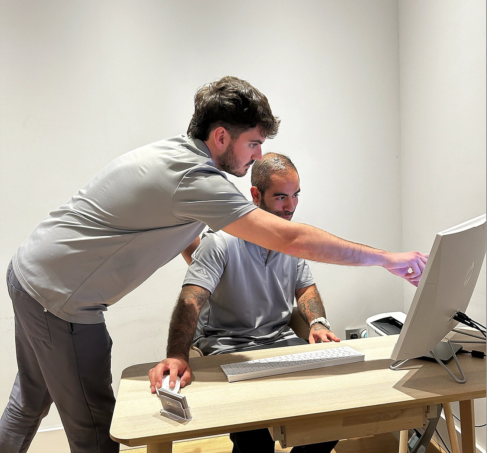
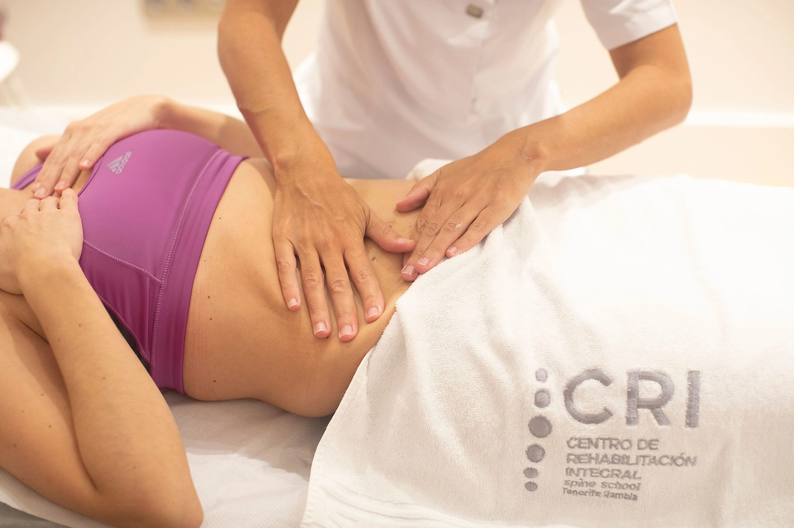
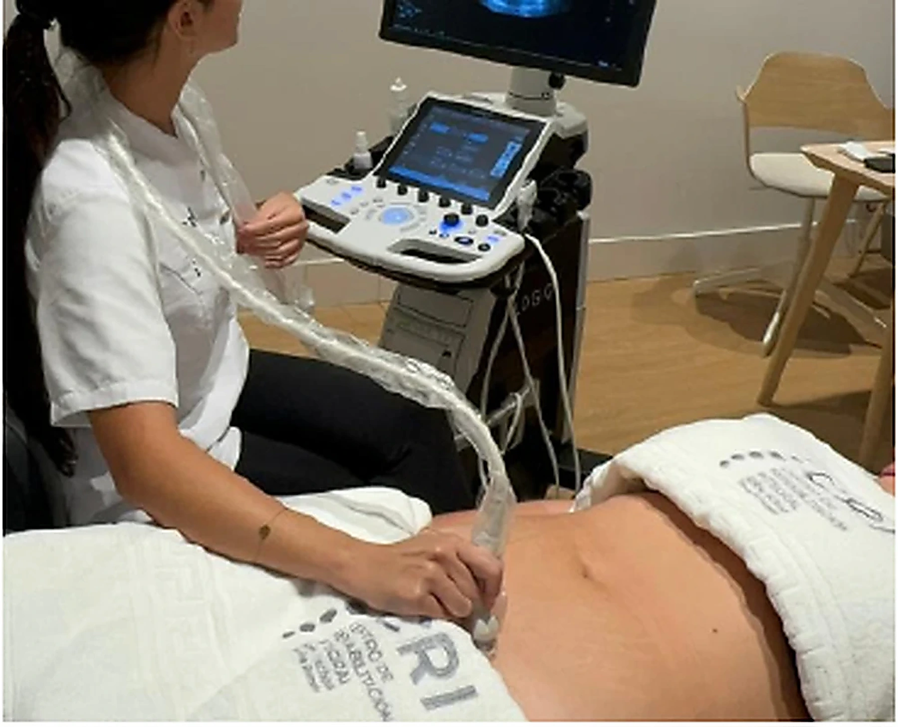
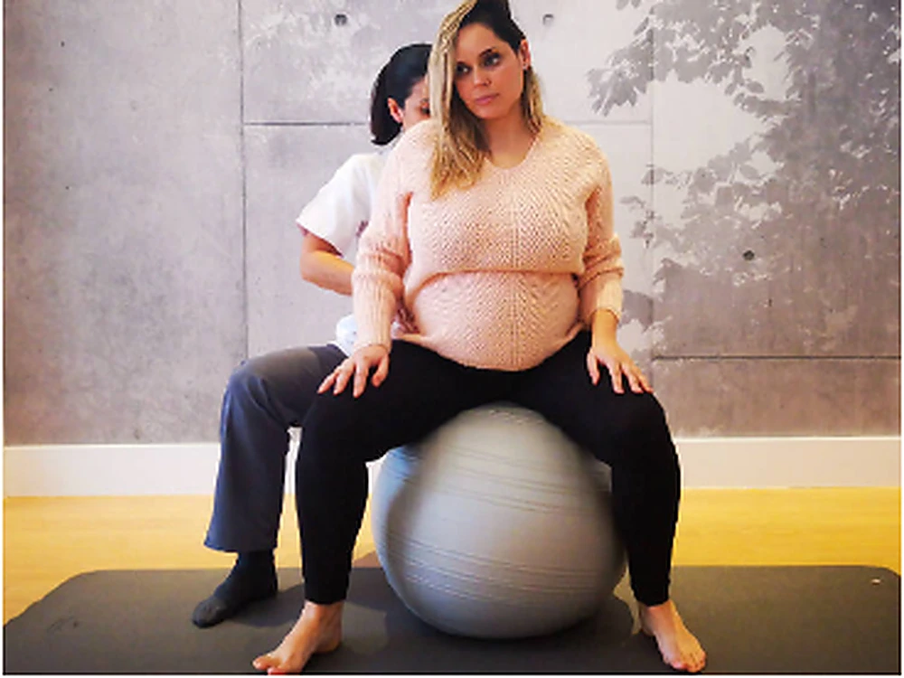
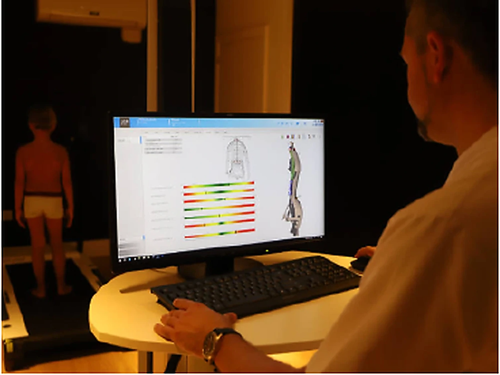
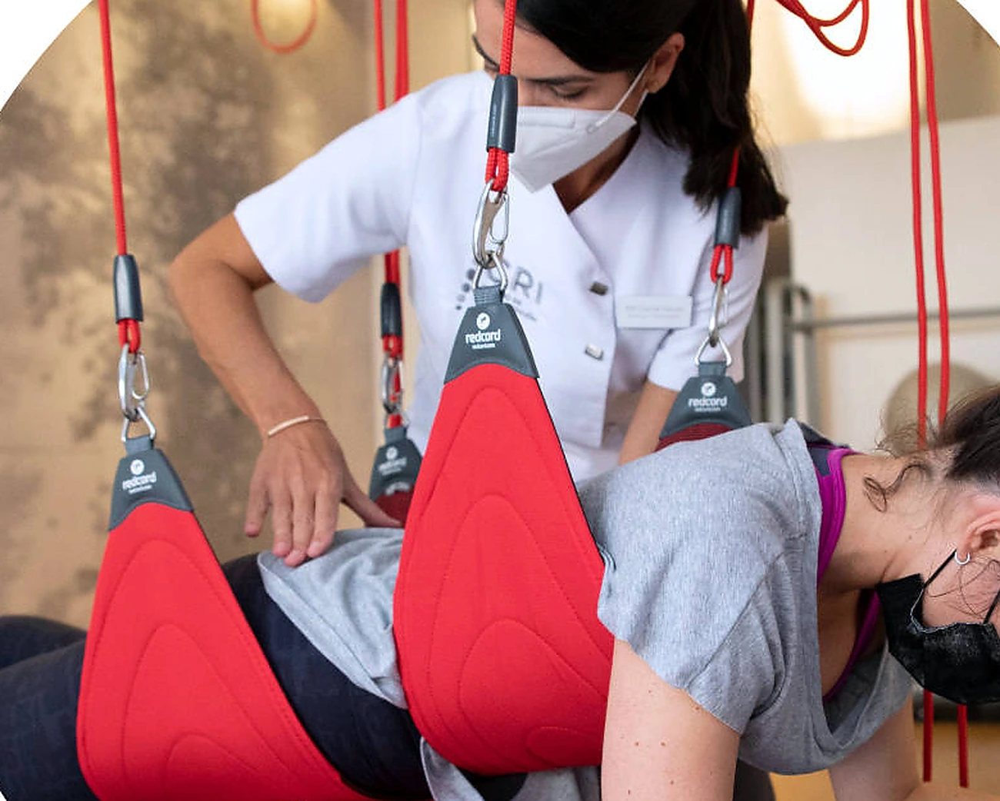
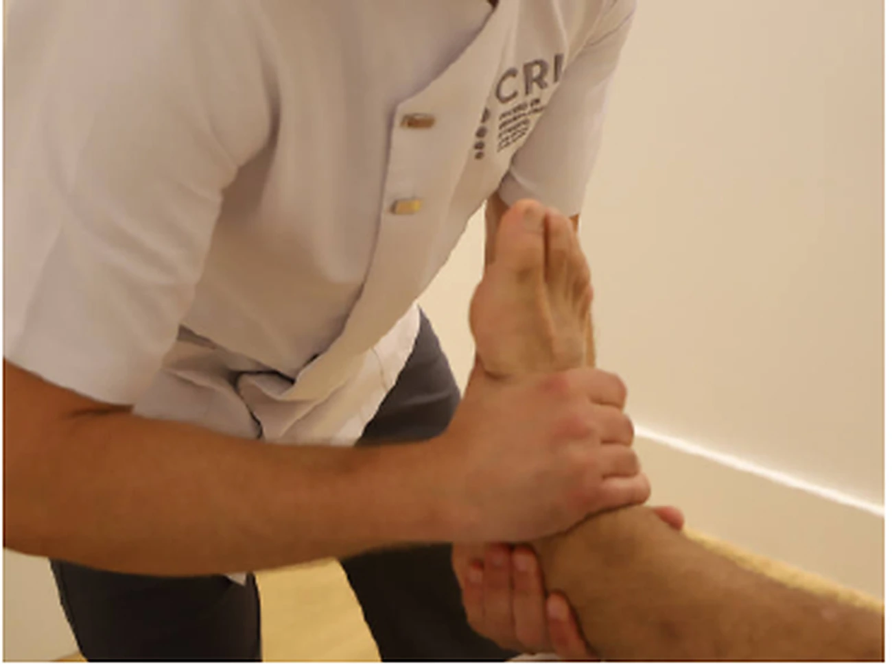
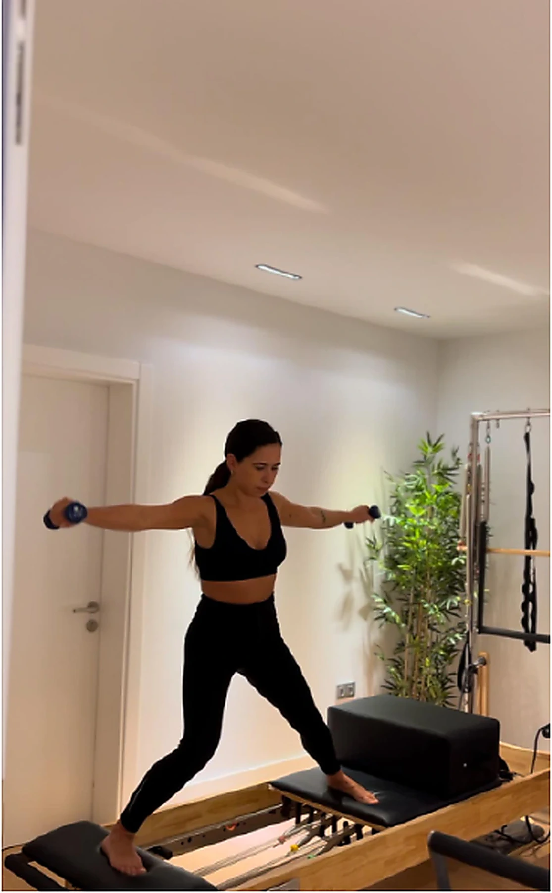
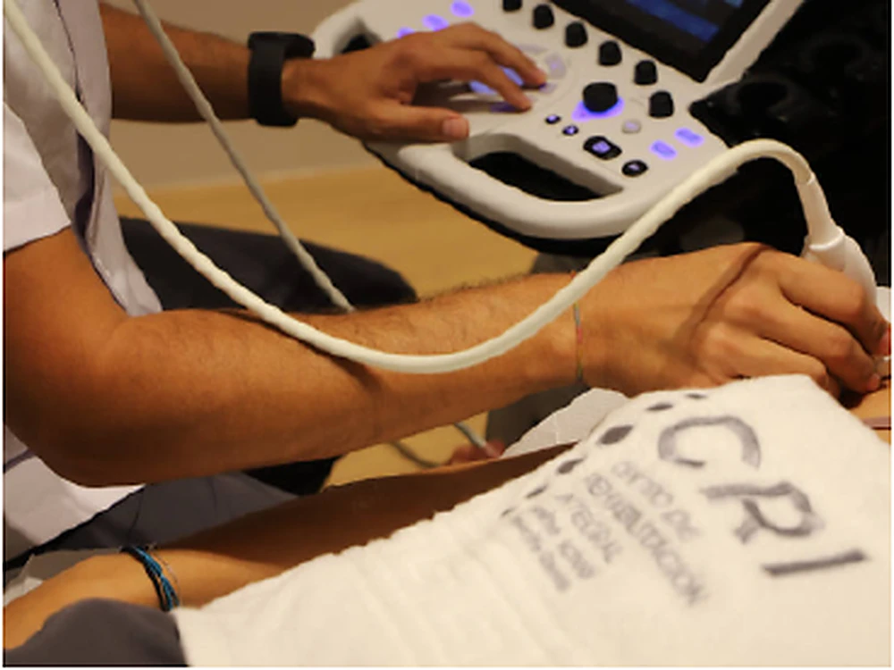

Recuperar función para volver a lo que importa.
Combinamos terapia manual, ejercicio terapéutico, razonamiento clínico y tecnología para ofrecer un tratamiento personalizado y progresivo.
Un plan que evoluciona contigo.
No aplicamos protocolos cerrados. Valoramos, tratamos, medimos y ajustamos según tu respuesta y tus objetivos.
Entendemos qué limita tu movimiento y qué necesitas recuperar.
Integramos técnicas manuales, ejercicio y tecnología cuando aporta valor.
Te damos herramientas para mantener los resultados y prevenir recaídas.

Fisioterapia para cada etapa del proceso.
Cada especialidad dispone ahora de una página propia con información clara, objetivos y acceso directo a cita.

Terapia manual
Técnicas manuales para aliviar dolor, recuperar movilidad y mejorar la función.
Ver servicio →
Fisioterapia de suelo pélvico
Valoración y tratamiento de alteraciones pélvicas en diferentes etapas de la vida.
Ver servicio →
Fisioterapia preparto y postparto
Preparación física durante el embarazo y recuperación funcional después del parto.
Ver servicio →
Fisioterapia pediátrica
Intervención adaptada al desarrollo motor y funcional de bebés, niños y adolescentes.
Ver servicio →
Fisioterapia neurológica
Rehabilitación orientada al movimiento, el equilibrio y la autonomía.
Ver servicio →
Fisioterapia traumatológica
Recuperación de lesiones musculoesqueléticas y procesos posquirúrgicos.
Ver servicio →
Pilates terapéutico
Ejercicio guiado para mejorar control, movilidad, fuerza y percepción corporal.
Ver servicio →Terapia acuática en Adeje
Rehabilitación en agua para facilitar el movimiento y reducir la carga articular.
Ver servicio →
Fisioterapia invasiva y ecografía
Técnicas ecoguiadas integradas en un plan de recuperación funcional.
Ver servicio →